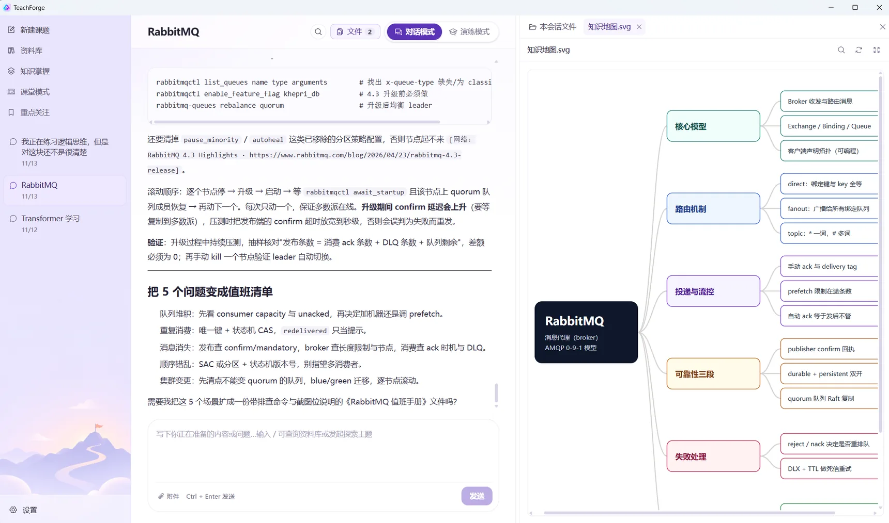
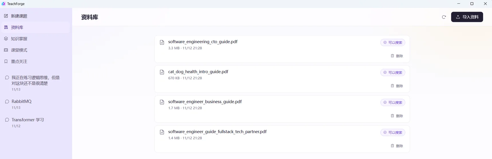
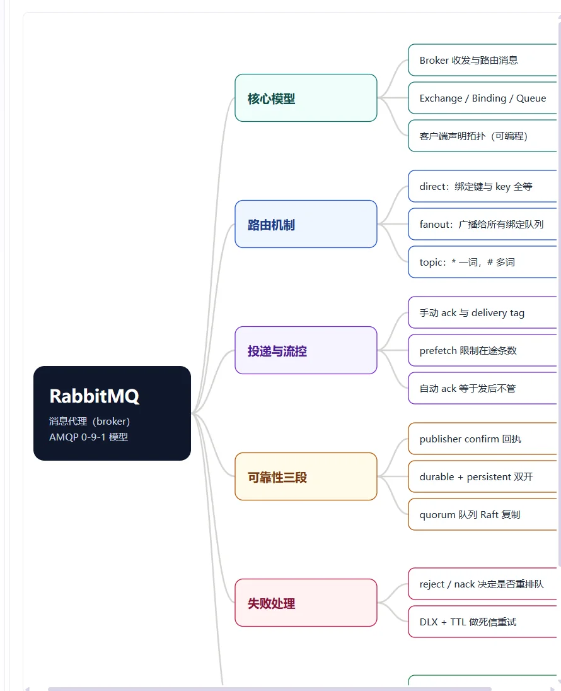
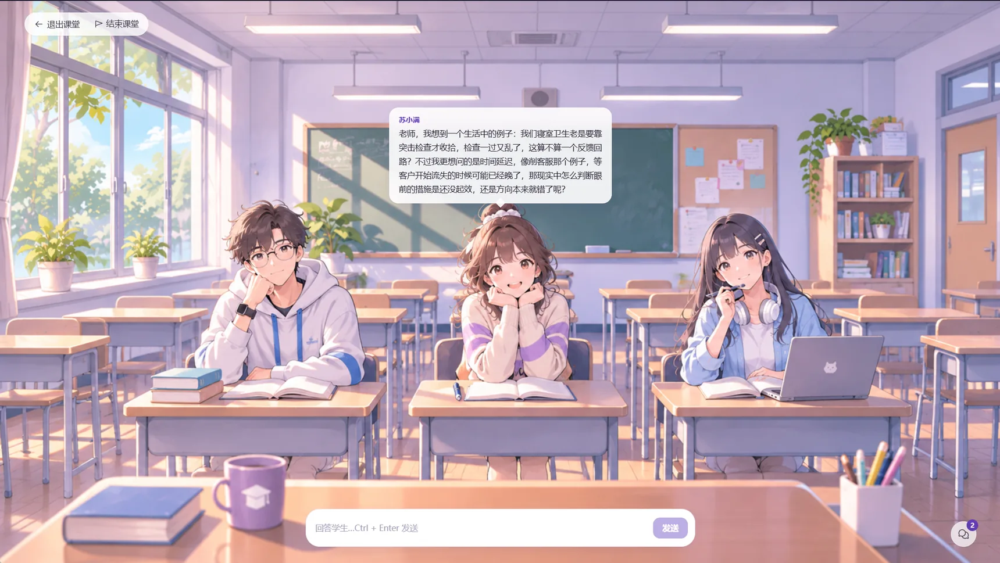
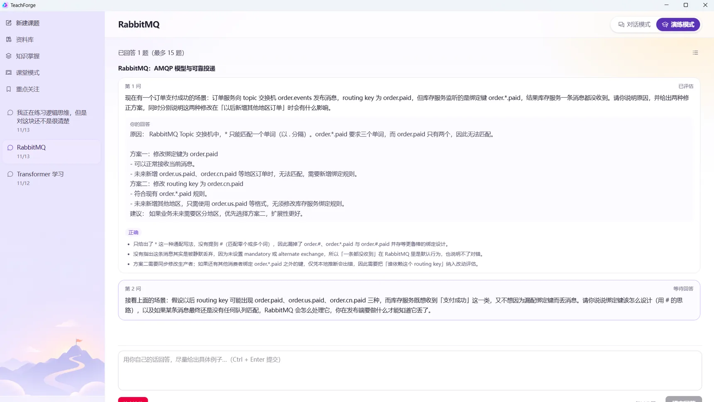
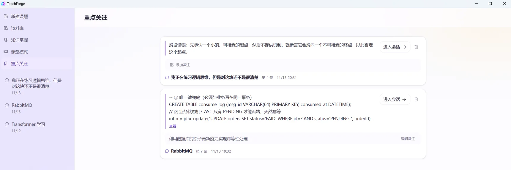
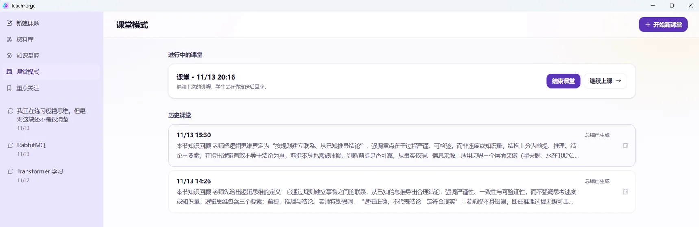

公开课准备
听课老师会问“为什么这样设计”，先在自己电脑上把这个问题答一遍。

费曼式学习
一块新材料，最缺的不是总结，是把它讲给别人听。这里没有考试，只有一个会转的循环。
PDF、DOCX、Markdown、TXT 在本机解析成可读文本，再生成一份目录摘要。模型需要时才按目录读原文，不把整本书塞进上下文。

追问定义、边界和反例；需要时用 /探索主题 产出一份知识文档和一张知识地图，留在会话文件里随时翻。

/探索主题 产出的 SVG，在会话文件里直接预览一轮对话 = 你讲一整段 + 一名学生回应。林澈抠定义与成立条件，苏小满要故事和例子，顾知夏只问「这有什么用」。不能像聊天那样只回一句。

演练模式按知识点逐题提问，同一道基础题最多追问 2 次，总上限 15 问——上限是保护，不是目标。答得虚就继续问，答得稳就换知识点。

在回答里划一段，收进「学习笔记」：保留原文、会话名和第几条消息， 点「进入会话」直接回到那句话，还能补一句备注。

区别
表单填完，一次性产出讲稿、课件、教案。
产出交付给你，是否讲得清没人验证。
目标是“更快写完”。
AI 扮演学生，你讲给它听，它接着追问。
产出是逐题评估、掌握状态、课堂总结。
目标是“讲得清”。
讲不清的地方，
会被问出来。
真实场合
公开课、试讲、教资答辩、开学第一课——循环里被问住的那几句，就是讲台上会被问到的。 你在自己电脑上练的，正是这些场合里要开口的那一遍。
听课老师会问“为什么这样设计”，先在自己电脑上把这个问题答一遍。
背熟的是流程，追问考的是理解。先被问住，考场上才不慌。
新班第一节，学生第一个问题往往是最基础的，也最容易讲砸。
没有前人经验可参考，只能先自己把边界和反例想清楚。
同行的追问比学生更硬：数据、前提、适用范围，一样都躲不过。

课堂模式不做评分，也不产出掌握度结论；需要证据时回到上一步的演练模式。
本地与隐私
Windows 桌面应用，后端只监听本机回环地址，没有账号体系，也没有云端档案。
~/.tech-forge。每次调用模型，当轮相关上下文会发送给 DeepSeek API。资料文件本身留在本机，但不要让“本地优先”读成“完全离线”。
Key 以明文保存在本机 config.toml，界面默认遮蔽。
上手
装好打开设置，填入模型 ID 与 API Key。Key 只存在本机。
不想先准备材料，就从样例课题开始；有材料就拖进资料库。
把一块知识讲给三名学生听，然后进演练模式，看它从哪一句问住你。
系统要求：Windows 10/11 x64 · 按用户安装，可改安装目录 · 需联网调用模型
常见问题
它们帮你写，TeachForge 要你讲。产出不是一篇讲稿，而是「你哪里讲不清」的逐题证据与掌握状态。
同一件事：先把知识讲给别人听。学一块新材料、备一节课、练试讲，走的是同一个循环，用的是同一个客户端。
客户端免费下载。模型走你自己的 DeepSeek Key，按量计费，不经过我们，也没有订阅。
资料与记录留在本机；调用模型时当轮相关上下文会发给 DeepSeek。没有账号、没有云同步。
当前只有 Windows x64 桌面版。Mac 与移动端不在本期承诺内。
安装包未做代码签名。点“更多信息 → 仍要运行”，并用下载区提供的 SHA256 校验。
当前需要手动下载新版本覆盖安装，数据在 ~/.tech-forge，不受影响。自动更新在计划中。